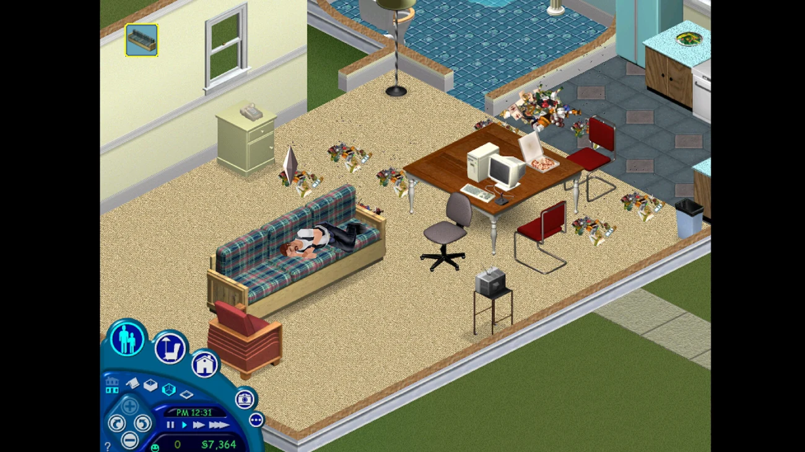
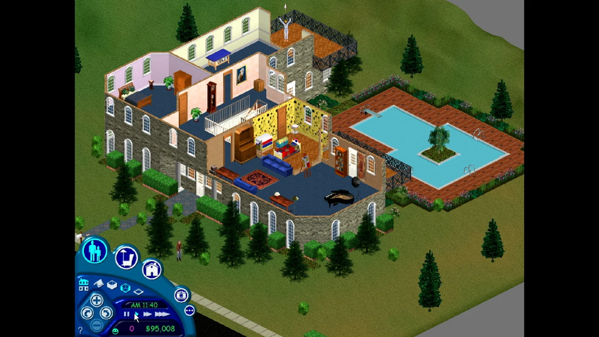
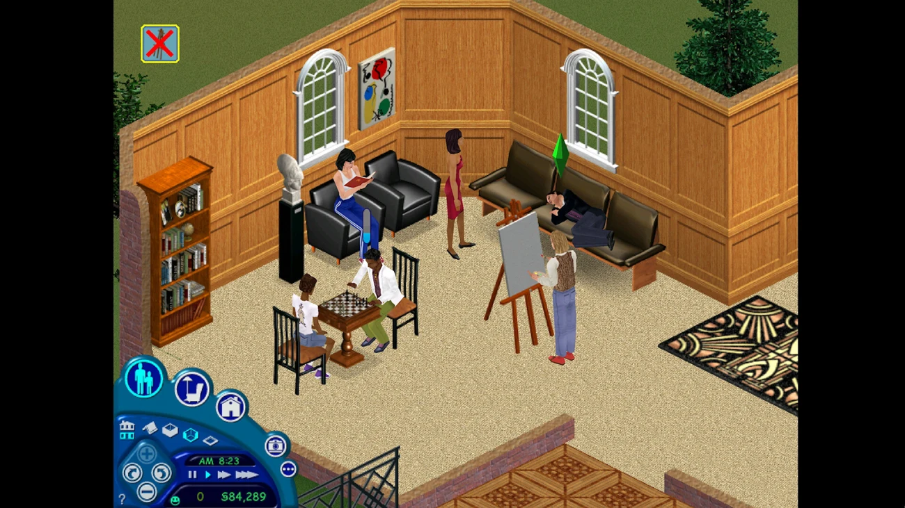

? Back to Lab 2 and my project
AFTER THE GUEST LECTURE / AI & CODE / LIVE FEED
VIBECODING,
for real.
Follow the five stages. Catch unwanted AI changes, choose a tool and write one request for your own project. Decide what the interaction says and does. The extra laboratory is optional.
- 01Intend
- 02Ask
- 03Machine writes
- 04Read
- 05Test
- 06Make it yours
CHECKPOINT 01 / Name your project and one change. Bring your tested JavaScript.
Keep the project. Add one small change.
You built a click response in JavaScript. Now use AI to help improve one part of that same project.
My tested JavaScript
No saved code? Open your own project in VS Code, or complete the JavaScript laboratory first. You can continue with a small change you understand.
CHECKPOINT 02 / Spot the unwanted decisions in the example before accepting any code.
REPLAY 01 A coding example, step by step
One student. One button. One AI.
The project is the bus stop from the Signal Control Room. Press Play and follow each beat. At beat 04 the replay waits for you.
Your turn. The AI made 3 decisions nobody asked for. Click the lines.
0 / 3 caught
CHAT Ask ▾
LIVE PREVIEW index.html
A place I know
I hear rain at the bus stop.
localhost says
Welcome to the future!
BEAT 01 / 06 · INTEND
Press Play. Nothing happens on screen until you know what you want.
CHECKPOINT 03 / Use your own goal. Describe the action, result, reason and limits.
FORGE 03 Build your prompt
Ask for the change you chose.
WEAK PROMPT
“make my page interactive and cool”
The AI has to guess everything, so it decides your colours, fonts and words for you.
AUTHOR'S PROMPT
“When someone clicks the button, the bus stop text should switch to its future, so visitors can compare the present with an imagined future. Plain JavaScript in script.js. Keep my colours and fonts. Explain every line.”
One action. One result. One reason. Clear limits.
PROMPT POWER EMPTY
Fill in the three blanks. Your prompt appears here.
CHECKPOINT 04 / Open your chosen tool. Use the interface cards when you need them.
WORKBENCH 02 Choose your tools
Your idea. Your tools. Your decisions.
-
01 / SWITCH IT ON
Sign in to Copilot
Select Signed out in the status bar, then Sign in to use Copilot. Complete GitHub sign-in.
02 / CHOOSE A MODEL
Claude or GPT, in the same chat
Open the model picker below the chat input. Choose an available Claude or GPT model.
03 / ADD OR SHOW MODELS
Make a model available
Optional: open Chat: Manage Language Models to show an available model. Use what your account already includes.
04 / CHOOSE A SESSION
Claude and ChatGPT-backed Codex
Optional: in the Agents window, choose Claude or Codex as the session target. Codex can use ChatGPT sign-in. Otherwise continue with Copilot.
-
05 / OPEN THE CHAT
Talk to it in the Chat view
Open Chat with Ctrl + Alt + I on Windows or Control + Command + I on Mac. Start with one small request.
-
06 / ASK ABOUT ONE PIECE
Select code, press Ctrl + I
Select the code you want to discuss. Ask what it does before asking for a change.
-
07 / READ THE DIFF
Red goes out. Green comes in.
Read the changed lines. Check for colours, words or behaviour you did not request.
-
08 / DECIDE
Keep or Undo. You choose.
Test the change. Keep what fits, or Undo what does not. Write down why.
-
09 / TIME TRAVEL
It broke? Restore a checkpoint.
If a request goes wrong, restore its checkpoint. Keep a separate backup too.
CHECKPOINT 05 / Try your request in your real project. Review the result and record your tests.
Ask. Inspect. Test. Decide.
- Ask once. Use your request from checkpoint 3, with only the relevant code. Keep a copy of your working version.
- Inspect. Read the proposed changes. Ask for an explanation of a line you do not understand. Undo any changes you did not want.
- Test twice. Run your project. Check the first and second clicks; check it at phone width.
Working without AI? Record your own change and tests here instead.
CHECKPOINT 06 / Keep your own decisions visible. Return to your project or choose an extra mission.
CODE 04 The author's rules
Five rules that keep you the author.
- Intention first. Before you ask anything, write one sentence: “When someone clicks ___, the page should ___ because ___.” That sentence belongs to you.
- Ask for one small thing. One response to one action in your project. Not the whole page.
- Read before you keep. Go through the answer line by line. Mark what you understand, what you do not, and what it decided without being asked: colours, fonts, text, extra features.
- Break it and make it yours. Change at least one thing by hand: simplify it, rename it, reject a decision, fix what does not work. Then test it twice.
- Log it. In your experiment note, write which tool you used, what you asked, what you kept and what you changed. Follow the course’s rules for declaring AI help in assessed work.
Your choice: you can do this whole lab without AI. Write the interaction yourself and compare it with a classmate who used AI. That is an equally good experiment.
If AI wrote half the code but you made the decisions, who made the page?
Open the step-by-step AI coding tutorial → AI coding slides ↗
CHECKPOINT 07 / Optional: explore feelings, aesthetics and authorship in Turing?s laboratory.
★ EXTRA LEVEL Talk to the machine with your feelings
Dr. Turing's Laboratory 2078
> TRANSMISSION FROM 1950 ▮
“We can only see a short distance ahead, but we can see plenty there that needs to be done.”
LISTEN
Five missions. Bring a feeling, build an interaction, and make it yours.
YOUR OBJECTIVE
Translate one feeling into choices you can see or interact with.
MISSION 01 / TRANSMIT A FEELING
A feeling can become a design decision.
You do not have to start with code. Start with a feeling and say it out loud. Describe how space, sound, timing and interaction could carry that feeling. A lonely scene might have a lot of empty space, but loneliness has no single colour or font. Your interpretation comes from your experience and cultural references. Ask for a small version, then change the choices that do not fit.
Try a feeling word to get design ideas. Choose what fits your project.
Try: lonely, angry, calm, free, nostalgic, anxious, love…
- > waiting for a feeling…
YOUR OBJECTIVE
Move through the dark and plant three lights with the pinecone.
MISSION 02 / PLANT A LIGHT
Loneliness meets empowerment.
This is what that one sentence could become: a small light alone in a big dark. Tap the dark to move. Press the pinecone to leave something behind.
Tap or click the field to move. With a keyboard, focus the field and use the arrow keys. Press the pinecone to plant a light.
One small light in a very big dark.
Do I need a button for this?
Yes. So I asked for one.
See the pinecone request
WHAT I FELT
“do i need a button for this? yes. add a button here. i want it to be a pinecone because that resembles how my soul feels while im lonely and empowered at the same time”
WHAT I SAID TO THE MACHINE
Add one button below the game canvas in index.html. Draw it as a pinecone with inline SVG, not an emoji: dark brown scales and one warm, glowing edge, because it should feel lonely and strong at the same time. When someone presses it, plant a small light where the character stands and make the world a little warmer each time. Keep my existing colours and fonts. Plain JavaScript in script.js. Explain every line.
- Where below the canvas
- Looks like a pinecone, SVG
- The feeling dark scales + a glowing edge
- Does plants a light
- Limits my style, plain JS
YOUR OBJECTIVE
Spot one generic choice in your page. Replace it with a decision that fits your idea.
MISSION 03 / REBUILD THE ROOM
Remember The Sims?
Remember the first furniture in the original Sims? A cheap sofa. A bare room. It works, but you start seeing what you want to change.
An AI page can work and still feel generic. That unconsidered filler is often called AI slop. Look through the three rooms. Then find one default in your page that does not fit your idea.
Your job is to develop that eye. A rough first draft is a starting point. Look again, choose what belongs and learn enough code to change it.

FIRST LOOK
“It exists! I can finally play.”
The first build gives you somewhere to begin. An AI page can bring the same relief: a heading, some colour, a working button. Enjoy that first success. Then look at what you actually received.

SECOND LOOK
“Wait. Why did it put that there?”
After a while, you notice choices that do not fit. A stock welcome message. A feature you never asked for. A dramatic gradient doing the work of an idea. This is where you start spotting AI slop and asking for specific changes.

YOUR DECISIONS
“I want people to sit together. Build around that.”
Now you choose what the space makes possible. Keep the plain furniture if it fits. Change the layout so people can meet. In your page, give the words, colours and interactions a reason. The more you compare and revise, the more generic filler stands out.
YOUR OBJECTIVE
Take one small change through a complete build and test loop.
MISSION 04 / DEBUG YOUR OWN PROJECT ? 5 MIN
One change. Prove it works.
Open your project beside this lab. Choose one button or interaction to improve. Use your own idea; AI can help with the code.
- 01 Choose
- 02 Test
- 03 Repair
- 04 Verify
Choose your target
Try to break it
Click once, then again. Try a different choice. Does the result match your idea?
Make one deliberate change
Find the code responsible. Edit it yourself, or ask AI for this specific change. Read the result before keeping it.
Run the final checks
Test your actual project before checking each box. If something fails, go back and repair it.
YOUR OBJECTIVE
Connect something you care about to one playable action.
MISSION 05 / MAKE IT YOURS
Bring something you care about.
Pick an interest. Turn it into something a visitor can do.
- ClimateLet a choice change a coastline.
- PoliticsLet a player decide who gets heard.
- PhilosophyExplore being alone through a character?s choices.
- SaunaAdd water. Change the heat and sound.
Or choose your own. Borrow a colour, song or image you love. Decide what it means in your project.
My Lab 2 project note
Prompts and briefs you add here stay with your existing lab note.
Return to my project ?